環島第4天
今天的行程：吉祥溫泉旅館－台193縣道－鶴岡－自強外役監獄－富田－花蓮大橋－花蓮港－七星潭－三棧－接台9線－新城－太魯閣（全程約100公里）
環島進入第4天，尤其是在前一天才創下日騎137公里新高後，今天見到行程表預計里程數僅100公里，心想今天的行程應該比較「軟」了吧（最後事實證明，我的想法是錯誤的）。由於昨晚進入旅館時，天色已經昏暗，無法一窺旅館全貌，早晨起來看到旅館庭園，綠意盎然，還有小溪、小湖，景觀也算怡人，只是名字「吉祥溫泉旅館」較有台味。
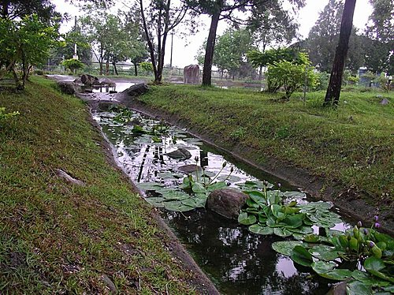
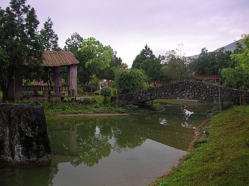
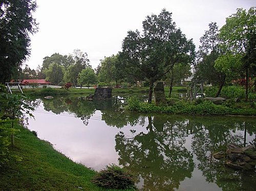
補一張我們昨晚裸湯洗溫泉的地方，是否有一種「質樸」之美。

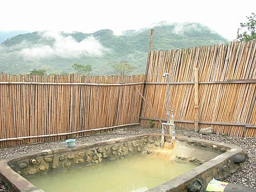
出發前，照例要誓師一下，我雖高舉右手假裝「元氣」樣，實際心裡的OS卻是「我好累啊」！
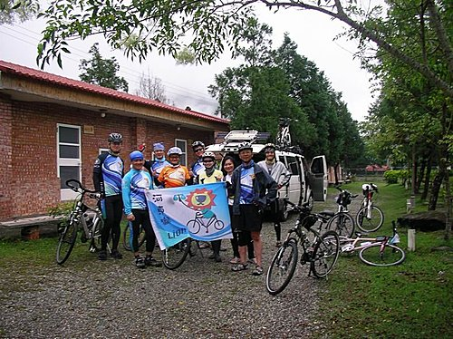
台193線道位於海岸山脈與花蓮溪之間，路程雖曲折蜿蜒，惟路旁景色盡是秀麗田野風光，的確是單車族的私藏好路線，出發未久後，天空飄起了小雨，初時覺得遠山雲霧瀰漫，近景確又翠綠動人，別有一番風味，可在雨中騎了數個小時，緩升坡、陡升坡接踵而來，已無心情觀賞四周風景，只有一個念頭，何時才有平路可以騎啊！
台193線路旁的田園風光
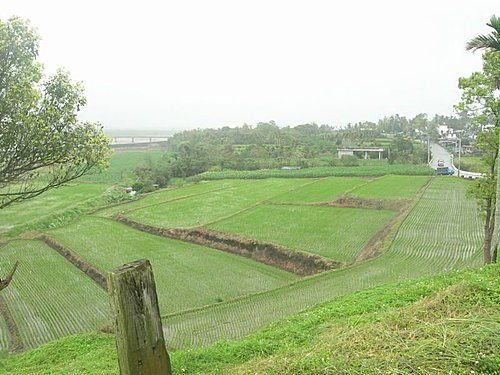
就是這種來往車輛甚少，四周美景接連的鄉間小徑，才能博得單車族的偏愛
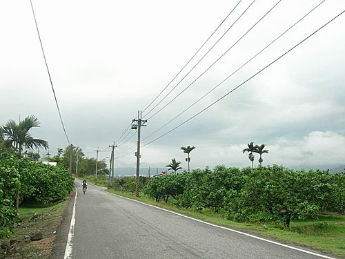
193縣道鶴岡沿線，正逢文旦花盛開，整路花香撲鼻，令人難忘
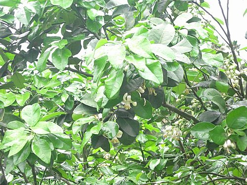
路旁休息一觀遠山景色
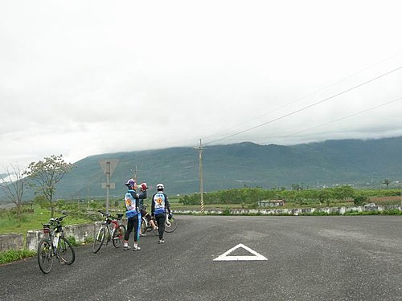
途經自強外役監獄，在沒有事先聯繫下，典獄長還是熱情招待（中間站立，未穿車衣者），盛情感人
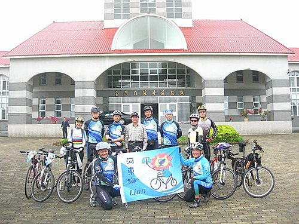
過了自強外役監後，天空開始下雨，雨中騎車的滋味，淺嘗可以，騎久了可是件累人的事
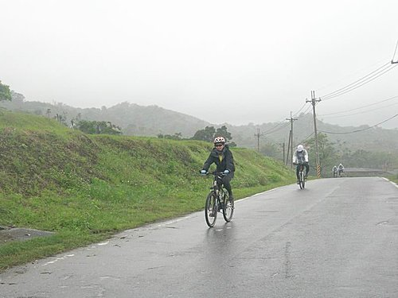
沒騙你吧，這條路曲折蜿蜒而且上坡不斷
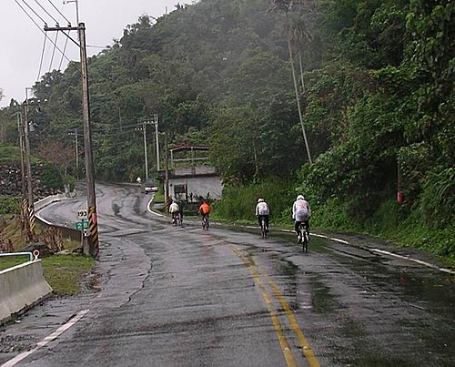
今天原本預計中午在超商用餐，但沒想到整條台193線沒有半家超商，正在又累、又渴之際，神奇的吳大，竟然可在這人煙稀少的地方，找到正要出外擺攤賣臭豆腐、麵線的老闆，提供我們一頓膳食，真是「就感溫」，不過可能因為該時大家都飢寒交迫，沒拍下生命中最重要臭豆腐及麵線的相片，但還是在此帶上一筆，以表謝意。
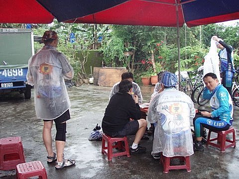
這就是我們吃中餐的地點「米棧部落」，附近也有一條自行車道，不過我們到此已無力再去探索了
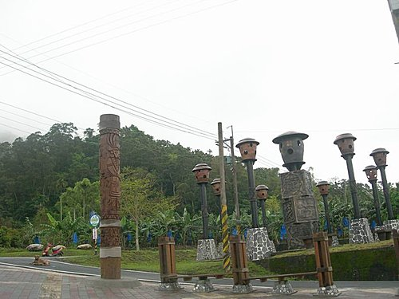
吃完中餐後，到米棧部落的遊客中心休息、喝茶。
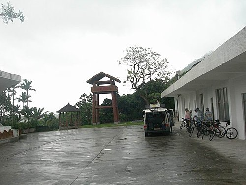
經過一番搏鬥後，總算騎離台193線道，經過花蓮大橋後，甫造訪便利商店，就碰到也是環島的單車同好，奇怪怎麼有似曾相識的感覺，原來他們是鳳山市中山西路捷安特店的「新活力車隊」，看到他們單車上大包小包的行李，心想我們有補給車還真是件幸福的事。
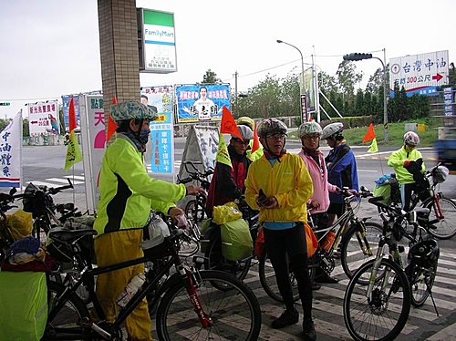
進了花蓮市，第一站先到花蓮港濱海公園一遊，我又舉起右手，表示我仍然「元氣」，實則已快不支倒地。
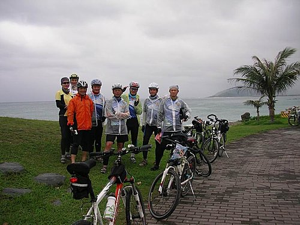
花蓮港濱海公園一隅。
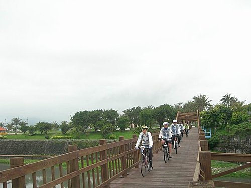
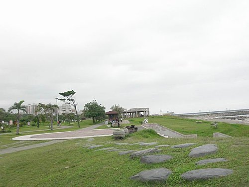
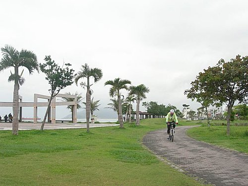
接下來轉進花蓮七星潭，它是一個礫石鋪成的新月型海灣，我們順著沿海灣鋪建成的自行車步道輕鬆騎乘，一享沙灘、浪花及一望無際的太平洋之美。
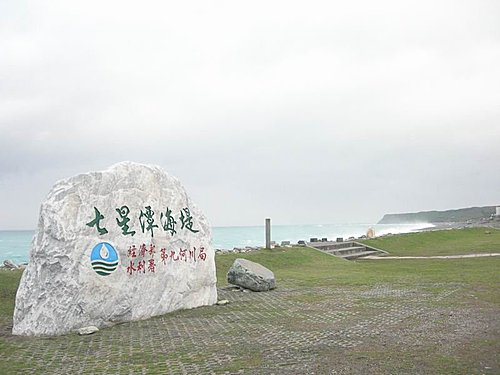
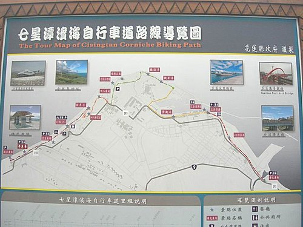
大夥魚貫延七星潭岸邊騎乘，帶頭的是1213學長。
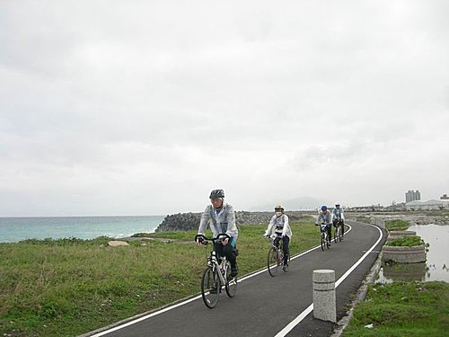
七星潭景色之美，舉證如下圖：
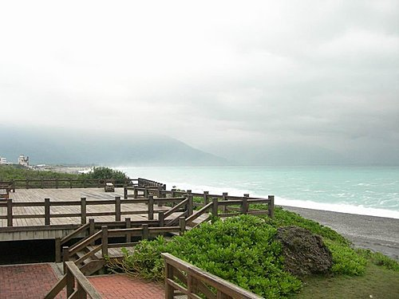
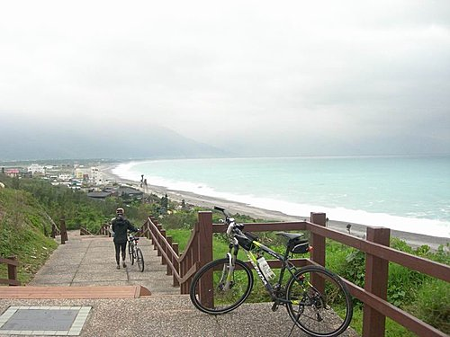
造訪完七星潭後，下一站的目標就是我們今晚休憩之民宿：「走過虹橋」，不過因為到達該處時，已是晚上七點多，只覺又累又餓，並未感覺該處之美，清晨起來，發覺此民宿背山面海，秀致典雅，老闆誠懇熱情，是值得一推的好民宿（私借環島第5天的相片一用）。
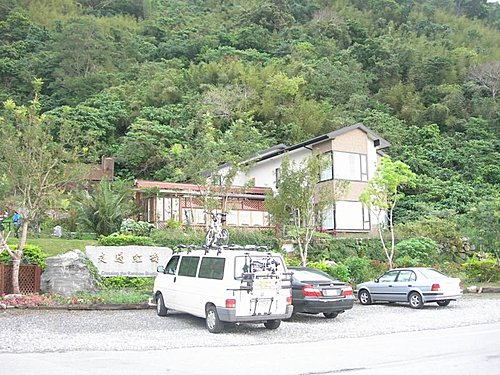
行筆至此，環島第4天的旅程已介紹完畢，其餘更精彩的旅程，就容後述吧。